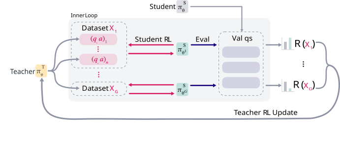
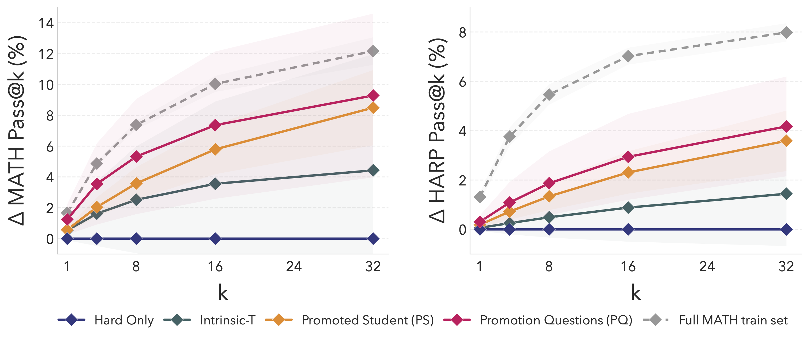
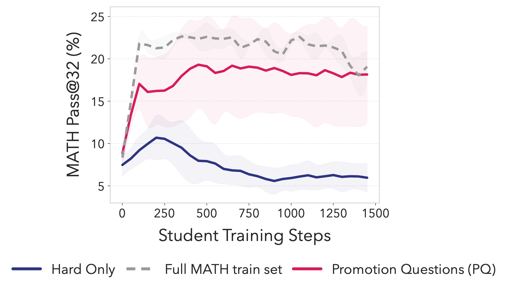
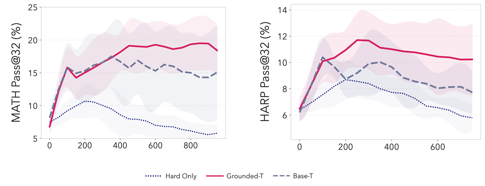
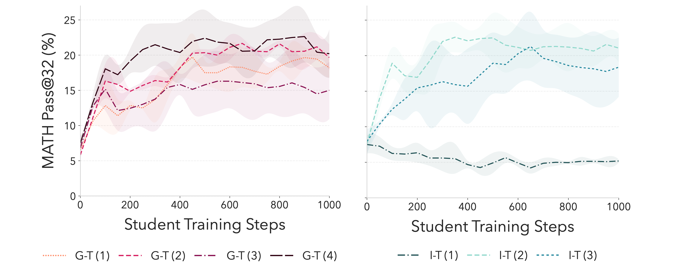
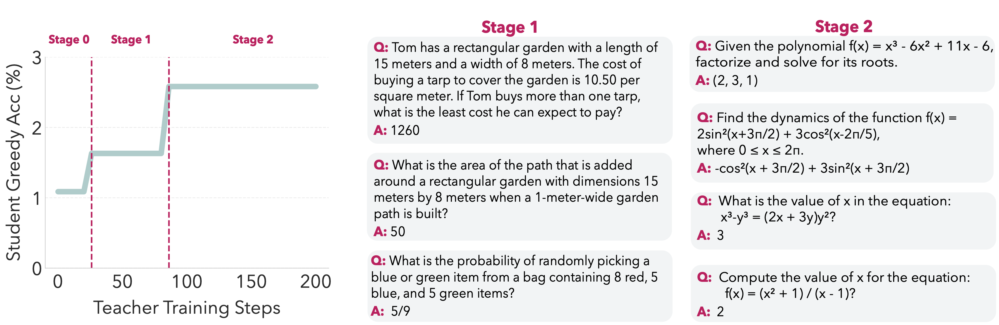

The Sparse Reward Plateau
RL for LLMs has been extremely effective for enhancing reasoning on verifiable problems, but it has an important limitation: models cannot learn from tasks that they cannot already solve. RL relies on reinforcing correct outputs: if the model does not produce correct answers on a given dataset with some frequency, then the rewards that it receives are too sparse to produce the needed gradient signal, and the learning curve plateaus.
Curriculum learning in RL is well studied; we know that training on easy tasks first helps models generalize to harder ones that they cannot directly reach initially. However, this largely relies on already having human-curated, annotated data to draw upon.
In our new paper, we ask instead if models themselves can generate a stepping stone curriculum to break their own reasoning plateau.
Hypothesis: Latent Pedagogical Ability
We hypothesize that pretrained LLMs have the capacity to directly generate an automated curriculum that makes hard problems learnable.
Intuition: Even if a model is trapped in a sparse-reward basin, pretrained LLMs have encountered huge amounts of easy and intermediate problems already. Consider solving a difficult calculus problem. Even if a model does not directly generate the correct answer with repeated sampling, it likely is capable of producing simple chain rule exercises. In turn, these chain-rule exercises can act as stepping stones:
- Gradient Signal: Training on these simpler exercises reinforces useful and relevant reasoning traces.
- Learnability Frontier: Solving subtasks and receiving non-zero rewards pushes the student policy out of the plateau and into a region where the original, harder problem becomes more learnable. In this sense, easier problems are a way of "digging out" model capabilities that are inaccessible from direct sampling/training.

The key questions:
- Is this latent knowledge present, and is it extractable without human intervention?
- Can we achieve this in domains with sparse, binary rewards that do not have automated ways of verifying question-answer pairs?
Exploring Self-Generated Curricula with SOAR
To explore if we can surface these pedagogical signals, we design a meta-RL framework: SOAR (Self-Optimization with Asymmetric RL).
The framework consists of two copies of the same base model: A student \(\pi_{\theta}^S\) and a teacher \(\pi_{\phi}^T\) (at the start, \(\theta = \phi\)).
Let's assume we have a train dataset of hard problems \(\mathcal{D}_{train}\), where training directly on these problems with RL does not improve test performance. The role of the teacher is to generate synthetic (question, answer) pairs such that training the student on them improves its performance on the difficult domain. This forms a bilevel optimization problem.
Formal Objective
The objective is to generate a small synthetic dataset \(\mathcal{X} = \{(q_i, a_i)\}_{i=1}^n\) of question-answer pairs such that training \(\pi_{\theta}^S\) on \(\mathcal{X}\) with RL improves performance on the target domain.
where RL-UPDATE is the RL training procedure of the student on \(\mathcal{X}\), yielding parameters \(\theta'(\mathcal{X})\), and \(R\) is the updated student's performance on some subset of \(\mathcal{D}_{train}\).
We instantiate it as a nested meta-RL loop:
- In the outer loop, the teacher generates candidate question-answer pairs that are partitioned into datasets.
- In the inner loop, the student trains with a REINFORCE-style algorithm on the generated datasets for a few steps, and then evaluates on a small sampled subset of \(\mathcal{D}_{train}\) to measure progress on the hard problems.
- The trained student's change in performance, relative to the initial student, is the reward for the teacher, which then gets an RL update.

To create a moving target for the teacher, and accumulate student progress, whenever the teacher's average reward exceeds a fixed threshold over several timesteps, we update the initial student baseline to be a trained student on the best generated dataset at the current timestep (we call this the promotion mechanism). We also keep track of the synthetic questions that led to this update, which we call Promotion Questions (PQ).
Grounded v. Intrinsic Rewards
We do not assume that we can automatically verify how well-posed or correct a synthetic question-answer pair is (as one could do in code). Instead, our grounded reward only rewards a question-answer pair if training on it improves student performance on real problems from \(\mathcal{D}_{train}\). This acts as a black-box grounding signal that tethers the curriculum to real student learning progress, without showing the teacher sample problems or using external curated data.
As a comparison point to grounded rewards, we also train teacher models with an intrinsic reward (Intrinsic-T), in particular the learnability reward, used by many self-play works with similar asymmetric setups. Learnability rewards teacher models for generating problems with a student pass rate of \(\approx 50 \%\). Past work has shown that since intrinsic rewards are proxies for the target that we actually care about (student learning progress), they can risk reward hacking and drift to degenerate outputs.
Findings
Our experiments use Llama-3.2-3B-Instruct. We extract difficult subsets of math reasoning datasets (MATH, HARP, and OlympiadBench) by filtering for problems where the model achieves 0 successes in 128 attempts. We call these subsets "fail@128" datasets. These fit the criteria of (1) having sparse and binary rewards, and (2) lacking a way to automatically verify question-answer pairs.
We train SOAR on MATH and HARP, keeping OlympiadBench as an OOD dataset. There are two main "outputs" of the meta-RL loop for us to analyze:
- PQ questions: Teacher-generated questions were used to promote the baseline student.
- Promoted Student: The updated student at the end of the meta-RL loop.
Another interesting byproduct is the trained teacher policy.
Our experiments led to three key findings.
1. Meta-RL finds effective questions
Our first set of experiments show that a model's pedagogical ability can be decoupled from its task-solving ability, and that grounded rewards surface questions that improve over reasoning plateaus.
The plot below shows the improvement in performance over training on fail@128 questions alone, which we call the Hard-Only baseline. For instance, we see \(+9.3\%\) pass@32 on MATH and \(+4.2\%\) on HARP (\(2 \times\) and \(1.5\times\) improvement, respectively). Training with PQ also outperforms questions from Intrinsic-T, which tells us that grounded rewards are more effective for discovering the right questions. Our OlympiadBench experiments in the paper also show that synthetic questions show some transfer to OOD datasets.

This plot shows example learning curves for students trained on fail@128 questions + PQ, fail@128 questions alone, and fail@128 + the full MATH train set (an oracle upper bound). Adding PQ questions improves substantially over Hard-Only, which does not sustain learning.

Why does the base model start with pass@32 above zero?
Looking at the plot above, one might ask: If we filtered the datasets for problems with a 0/128 success rate, why is the initial pass@32 roughly 8%?
We use different seeds for evaluation and the initial filtering, which means there is still some probability of the model producing a correct answer. If we model the success rate using a prior \(p \sim \text{Beta}(1,1)\), observing 0/128 successes gives a posterior of \(p \sim \text{Beta}(1,129)\) -- under which an \(8\%\) pass@32 is quite likely (\(\approx 72\%\)).
Nonetheless, direct RL training on these fail@128 questions does not sustain learning, and learning plateaus quickly.
Interestingly, direct inference on fail@128 test problems with the trained teacher does not improve over the base model. This suggests that generating stepping stone questions for hard problems, and actually solving those hard problems, are separate abilities.
2. Grounded rewards lead to better teachers
The next experiments illustrate why grounded rewards are needed to train effective teachers. We evaluate this by sampling questions from the trained teacher policy (Grounded-T) and training students on these questions + fail@128 questions.
First, grounded rewards sharpen the teacher's distribution of questions. Training students on questions generated from the base model leads to noisy outcomes, but the existence of successful runs tells us that useful questions are latent in the base model. Grounded-T questions, on the other hand, more reliably give a useful gradient signal.

Second, grounded teachers avoid instability and diversity collapse failure modes of instrinsic rewards. If we sample questions from different Grounded-T and Intrinsic-T teacher seeds, and train students with them, we see that Grounded-T students from different teachers have similar learning curves. Different Intrinsic-T teacher seeds, however, lead to different curves, and can even lead to student collapse.

We also find that Grounded-T teachers retain the diversity of the base model whereas Intrinsic-T teachers lose \(\approx 70\%\) of the base model's diversity.
3. Question structure over correctness
Our last takeaway is that for models on learning plateaus, diverse, coherent, and conceptually relevant questions are more important than correct answers.
Below are examples of PQ questions at different student progress stages. As the student baseline updates, the style and content of the questions shift. The questions look reasonable, but the answers are not always correct.

We annotate sampled synthetic questions for correctness, and find that all of the trained teachers have higher correctness and well-posedness rates than the base model. However, while \(63\%\) of PQ questions are classified as mathematically plausible and well-posed, only \(33\%\) of the problems have correct answers. Intrinsic-T has a higher correctness rate \(55\%\), yet leads to worse student performance -- likely because of diversity collapse.
Implications and Limitations
Our paper shows that meta-RL with grounded rewards can kickstart RL finetuning when the initial success rate is too low to get useful gradient signal. Alongside our conceptual takeaways, these results tie to the broader question of whether RL fine-tuning truly expands a model's learning frontier or merely sharpens the existing distribution. Our work can be seen as a way to reach latent knowledge that exists in the pretrained model's distribution, but is inaccessible with normal methods, by sharpening a more easily-accessible ability to generate intermediate questions.
The main limitation is computational cost; bilevel RL loops are expensive. We show in the paper that allocating extra compute to direct training on hard problems (via a larger group size) does not recover the improvements from meta-RL. Nonetheless, while our work provides a proof of concept for the value of grounded rewards in this setting, there is still significant headroom for future improvement in efficiency and scaling to larger models.
Cite this work
@misc{sundaram2026teachingmodelsteachthemselves,
title={Teaching Models to Teach Themselves: Reasoning at the Edge of Learnability},
author={Shobhita Sundaram and John Quan and Ariel Kwiatkowski and Kartik Ahuja and Yann Ollivier and Julia Kempe},
year={2026},
eprint={2601.18778},
archivePrefix={arXiv},
primaryClass={cs.LG},
url={https://arxiv.org/abs/2601.18778}
}